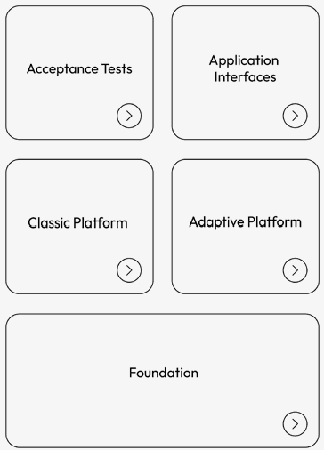
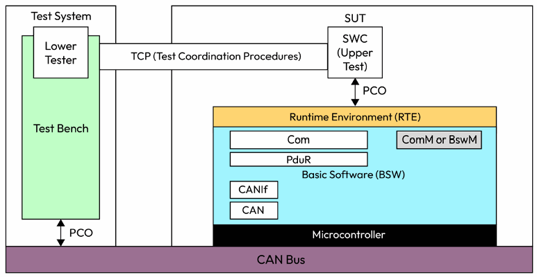
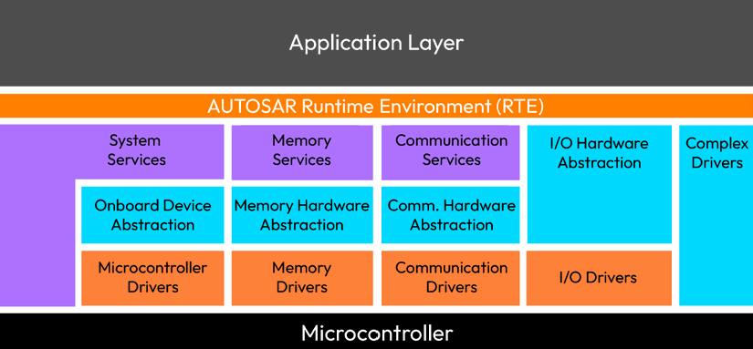

第1章 探索 AUTOSAR 的起源与目标
AUTOSAR Fundamentals and Applications — Hossam Soffar 著 | AI 辅助翻译
AUTOSAR（AUTomotive Open System ARchitecture，汽车开放系统架构）是汽车电子系统开发的标准化规范。它为车辆中的电子控制单元（ECU）提供了通用的软件架构，使得新功能的集成和开发更加便捷。AUTOSAR 是由主要汽车制造商和供应商组成的合作组织，其目标是提升汽车软件开发过程的整体效率和灵活性。
在本章中，我们将讨论 AUTOSAR 发展的动机、合作组织的架构，以及其宗旨与目标。本章将涵盖以下主要主题：
- 汽车行业的演变
- AUTOSAR 框架介绍
- 理解 AUTOSAR 标准
- 软件架构与设计
汽车行业的演变
在过去的几十年里，汽车工业已从一种简单的交通工具演变为堪比"轮上智能手机"的复杂机器。这一转变源于先进技术的集成，以及设计开发方式的日益成熟。
汽车的演变可以追溯到20世纪初第一辆汽车问世之时。那时的车辆简单实用，主要设计目标就是将人从A点运到B点。然而，随着技术的进步，汽车也在不断发展。在20世纪50年代和60年代，我们看到了安全带、安全气囊和防抱死制动系统等先进安全功能的出现。到了80年代，车载计算机开始被引入，实现了更先进的发动机管理和诊断功能。在90年代，车辆集成了更复杂的电子系统，例如电子稳定控制（ESC（Electronic Stability Control，电子稳定控制））和高级驾驶辅助系统（ADAS）。进入21世纪，汽车经历了巨大的变革。如今的车辆配备了曾经仅属于高端豪华车的先进功能。
电子控制系统和汽车软件占汽车生产成本的比例多年来持续上升。这一上升趋势在下图所示的 Statista 数据中清晰展现，该数据自1970年起便开始追踪这一发展：

图 1.1 – 电子系统占汽车总成本的百分比
汽车系统日益增长的复杂性给行业带来了软件开发方面的挑战。
汽车向智能、互联和自动驾驶机器演变的过程受多种因素驱动，包括：
- 对先进安全功能日益增长的需求
- 对更高效、更环保交通工具的需求
- 对更便捷、更互联驾驶体验的渴望
传感器、软件系统和互联互通等先进技术的采用，使汽车制造商能够满足这些需求，开创了智能、自动驾驶和互联汽车的新时代。
随着 ADAS 和网联汽车功能等新技术的集成，需要开发和集成到车辆中的软件数量显著增长。
与阿波罗登月任务的对比凸显了现代汽车复杂性的巨大提升。阿波罗航天器仅有数量有限的系统需要管理，而现代汽车可能包含多达100个或更多的 ECU、传感器和执行器，所有这些都必须在非常严格的时间约束下彼此无缝通信，以确保正常运行。此外，现代汽车是高度互联的设备，需要复杂的软件和网络能力，进一步增加了其复杂性。这种提升的复杂性使现代汽车能够提供先进的功能和特性，但也需要更复杂的维护和维修流程。
在讨论了汽车软件的演变和复杂性之后，让我们将焦点转向使现代汽车有效运行的关键组件之一——ECU。
什么是 ECU？
在进一步讨论之前，我们需要理解什么是汽车 ECU。ECU 是一台计算机——由印刷电路板（PCB（Printed Circuit Board，印刷电路板））与微控制器和各种电子元件组成——用于控制车辆中的各种功能。这些功能可能包括发动机管理、变速箱控制、气候控制、动力转向和制动。以下是一些汽车 ECU 的示例：
- 发动机控制模块（ECM（Engine Control Module，发动机控制模块））：ECM 负责管理发动机的性能，包括燃油喷射、点火正时和排放控制。
- 变速箱控制模块（TCM（Transmission Control Module，变速箱控制模块））：TCM 管理变速箱的运作，包括档位选择、换档时机和变矩器锁止。
- 车身控制模块（BCM（Body Control Module，车身控制模块））：BCM 控制与车辆车身和内饰相关的各种功能，如照明、气候控制、门锁和音响系统。
- 防抱死制动系统（ABS）控制模块：ABS 控制模块管理 ABS 的运作，有助于防止打滑并在制动过程中保持对车辆的控制。
- 电池管理系统（BMS（Battery Management System，电池管理系统））：BMS 的主要功能是监控、控制和优化车辆电池组的性能。它还确保电池组内所有电芯的充放电均匀，防止某些电芯过充，并最大化电池总容量。
这些组件的部分示例如下图所示：

图 1.2 – 车辆中 ECU 的示例
总体而言，汽车 ECU 在现代车辆的运行中起着至关重要的作用，为各种系统提供精确控制，并确保最佳性能、效率和安全。由于汽车 ECU 高度依赖复杂的软件来执行其功能，我们首先需要理解软件开发方面，以全面掌握 ECU 运行和设计的细微之处。
汽车软件开发简介
汽车软件开发是汽车行业持续创新和成功的关键组成部分。它涉及创建和维护用于各类汽车——轿车、卡车、公交车和其他机动车——的软件系统。这些软件系统承担多项任务，如发动机管理、导航、娱乐和安全功能。因此，该领域的工程师必须具备嵌入式系统、实时编程、控制系统和通信协议方面的专业知识，以创建可靠和安全的软件系统。
这是一个高度专业化的领域，需要与汽车开发团队的其他成员——如电气工程师、机械工程师和质量保证专家——密切协作，以确保软件系统无缝集成到车辆中并满足最终用户的需求。清晰的软件架构原则可以通过创建易于维护、修改和演进且对变化具有弹性的系统，帮助应对这一复杂领域的挑战。
这是一个充满挑战的领域，但在汽车行业的持续成功和创新中起着至关重要的作用。在讨论该领域的进展之前，让我们先了解传统的汽车软件开发方式。
理解传统软件开发
传统汽车软件开发涉及种类繁多的 ECU，它们具有不同的硬件和软件，这使得确保所有组件高效协同工作变得困难。每家供应商都有自己定义的软件架构、开发方法和 ECU 接口，导致整个汽车行业的软件组件（SWC）碎片化、非标准化。这种方法有以下若干局限性：
- 可重用性有限：为一个车辆或系统开发的 SWC 可能无法在另一个中重用，导致开发成本增加和上市时间延长——如果在另一个平台需要类似功能的话。
- 集成时间：不同 SWC 的集成可能是一个耗时且昂贵的过程，特别是如果这些组件从一开始就没有被设计为协同工作。
- 上市时间：新车型和新功能的上市时间可能漫长且成本高昂，尤其是在使用传统汽车软件开发方法时。这可能导致制造商和供应商错失机会和收入损失。
- 供应链复杂化：软件实现日益增长的复杂性与供应链日益增加的复杂性密切相关。在此背景下，软件开发人员根据原始设备制造商（OEM）或 Tier 1 供应商提供的需求定义来设计其组件，后者负责后续阶段的集成。
- 刚性：汽车软件通常是单体且不灵活的。此外，很难适应不断变化的需求和技术。
传统汽车软件开发是碎片化的、非标准化的和高成本的，使得开发高质量软件并满足汽车行业日益增长的需求变得困难。以下图展示了一个这种非标准化架构的示例：

图 1.3 – 非标准化软件架构示例
因此，AUTOSAR 被引入，以解决这些局限性，并促进更高效、更有效和更标准化的汽车软件开发。在下一节中，我们将通过一个案例研究来说明这一点。
案例研究 – 更换 MCU 与交换微控制器驱动
让我们考虑这样一个例子：一家公司想要升级一个 ECU，该 ECU 通常使用专有的软件和硬件架构设计和实现，不同汽车制造商之间几乎没有或完全没有标准化。ECU 中部署的微控制器通常是定制的，针对汽车制造商和特定车型进行了专门设计，任何对其的修改都需要对硬件和软件方面进行大量变更。
假设该公司想用更先进的微控制器替换 ECU 的微控制器。在这种情况下，他们需要设计一个与新的微控制器兼容的新硬件板，这可能需要更改引脚分配和其他电路。如果采用类似于图 1.3 所示的架构，大部分软件将需要重写或修改以适配新微控制器的外设接口和架构。根据 ECU 的复杂性，这将需要大量时间、资金和资源的投入。
总之，在 AUTOSAR 问世之前，更换汽车 ECU 的微控制器是一项艰巨的任务，需要大量的技术知识和法规专业知识。汽车制造商之间缺乏标准化加剧了这一问题，使得设计通用解决方案变得困难。此外，所涉及的软件和硬件的复杂性质使得任何升级或修改 ECU 的尝试都构成重大挑战，需要大量精力和资源。随着 AUTOSAR 的出现，范式发生了转变，它使软件不仅可以从微控制器中抽象出来，而且可以从整个 ECU 和车辆架构中抽象出来。这使得开发人员能够编写与其他软件通信的应用程序，完全从 ECU 架构、字节序、总线架构、信号打包与协议、以及车辆网关等方面抽象出来。
值得注意的是，我们在本文中主要关注了 AUTOSAR 在微控制器替换方面的优势。然而，AUTOSAR 的优势远不止于此。除了促进微控制器替换外，AUTOSAR 的广泛影响还积极作用于汽车软件和硬件的诸多其他方面，使其成为汽车技术领域更高效、更灵活的解决方案。
AUTOSAR 框架简介
AUTOSAR 是一个面向汽车行业的开放、标准化的软件架构。它由一个由汽车制造商、供应商和工具开发商组成的联盟开发。其目标是创建一个对所有人开放且可访问的汽车软件架构行业标准。该标准旨在满足汽车软件行业的技术目标：模块化、可扩展性、可移植性和功能可重用性。
AUTOSAR 的主要目标是开发一个可在不同汽车领域（如动力总成、底盘控制、车身和安全）中使用的标准架构。这种标准化旨在使来自不同供应商的 SWC 能够无缝协同工作，降低开发成本，并促进 SWC 的可重用性。它还有助于管理电气和电子系统日益增长的复杂性，并确保其质量和可靠性。
以下是生态系统中不同组成部分的工作方式：
- OEM：他们负责设定 ECU 软件需求，并选择 Tier 1 供应商来交付硬件和 SWC。通过采用 AUTOSAR，OEM 确保遵守安全和法规标准，同时促进模块化、可重用和可扩展的软件开发，以实现跨不同汽车系统和供应商的无缝集成与兼容。
- Tier 1 供应商：Tier 1 供应商是直接向 OEM 提供组件或系统（可以是硬件或软件）以用于车辆生产的公司。这些供应商处于汽车供应链的顶端，负责提供满足 OEM 规格和要求的高质量、可靠组件。汽车行业中 Tier 1 供应商的示例包括提供发动机、变速箱、制动系统、转向系统以及信息娱乐系统和 ECU 等电子元件的公司。
- 标准软件供应商：标准软件供应商提供符合 AUTOSAR 标准的软件模块，如通信栈和诊断服务，这些模块可以轻松集成并与其他 SWC 互换。标准软件按照 AUTOSAR 标准开发，可供 Tier 1 供应商用于构建更复杂的软件模块。
- 半导体制造商：汽车行业的半导体制造商提供电子元件。他们确保满足汽车行业未来的硬件和软件需求。
AUTOSAR 标准通过与合作伙伴的协作开发与维护，他们通过考虑支持用户路线图所需的用例来确保标准的持续相关性和先进性。合作伙伴根据其成员类型进行分组，在标准的开发、实现和使用方面具有不同程度的参与。这种方法鼓励多样化的利益相关者参与，并反映了整个汽车生态系统的需求和视角。AUTOSAR 的协作特性对其成功起到了关键作用，使其成为汽车软件架构的行业标准。主要类别如下：
- 核心合作伙伴：核心合作伙伴包括 BMW Group、Bosch、Continental、Daimler AG、Ford、General Motors、PSA Group、Toyota、Volkswagen Group 和 Volvo Group。他们是合作关系的初始成员，提供了开发 AUTOSAR 标准所需的资金和资源。
- 高级合作伙伴：一组作为 AUTOSAR 开发合作关系成员、并对 AUTOSAR 标准的开发和推广做出了重大贡献的公司。高级合作伙伴在合作关系中的参与度和影响力比普通成员更高，并享有额外的协作机会和提前获取最新 AUTOSAR 规范与版本的特权。
- 开发合作伙伴：开发合作伙伴通过分享其知识、专业技术和资源，在塑造汽车行业的未来中扮演着重要角色。
- 准合作伙伴：准合作伙伴的参与程度低于核心合作伙伴和高级合作伙伴，但仍能享受协作机会并获取最新的 AUTOSAR 规范和版本。
总之，AUTOSAR 通过提供一种共同语言和标准化框架，使 ECU 开发过程中的所有利益相关者能够有效协作。这促进了 SWC 跨不同汽车制造商的互操作性、可扩展性和重用性，减少了开发时间和成本，同时提高了软件质量和可靠性。
对传统软件开发的影响
AUTOSAR 通过提供标准化的方法来解决传统汽车软件开发的局限性。通过促进模块化、标准化和可扩展性，AUTOSAR 使开发满足汽车行业日益增长的需求的高质量软件变得更加容易。AUTOSAR 的成功体现在其作为汽车软件架构行业标准的广泛采用上。
以下是 AUTOSAR 解决传统软件开发局限性的一些方式：
- 通用平台：它为软件开发提供了一个通用平台和架构，使不同供应商和制造商之间能够协作。
- 模块化设计：它促进了模块化和标准化，使 SWC 更容易在不同项目中重用，并适应不断变化的需求和技术。
- 成本高效的集成：AUTOSAR 采用的标准化软件开发方法使不同 SWC 的集成变得更加容易和成本高效。
- 安全与安保：在汽车软件中实现安全和安保概念的框架有助于确保道路上车辆的安全和安保。
- 互操作性：它定义了一种通用的通信方法论，使来自不同供应商的 ECU 能够无缝互操作。
- 一致性：一致的软件开发方法使 SWC 的互操作性、可维护性和可扩展性更容易得到保障。
- 灵活性：它促进了模块化和灵活的软件开发方法，使其更容易适应不断变化的需求和技术。
在下一节中，我们将探讨 AUTOSAR 用于解决传统汽车软件开发局限性的方法。我们将研究 AUTOSAR 的通用平台、模块化设计、成本高效的集成、安全与安保、互操作性、一致性和灵活性如何通过提供一个标准化、高效的框架来开发卓越的汽车软件，从而改变了整个行业。
这些目标是如何实现的？
将基础设施与应用分离是软件架构的一个基本原则，它使软件开发人员能够专注于他们在开发应用软件（ASW）模块方面的核心竞争力和专业知识，这些模块提供了其产品的独特功能。他们无需担心底层硬件或软件平台，也无需担心 BSW 和运行时环境（RTE）的实现细节。相反，他们可以专注于自己在开发 ASW 模块方面的核心竞争力，同时使用标准化的接口和服务来访问 BSW。
下图展示了这个标准化接口的基本结构：

图 1.4 – AUTOSAR 标准化
将基础设施与应用分离还使 ECU 更加模块化和可扩展。来自不同供应商的不同 ASW 模块可以轻松集成到 ECU 中，新的 ASW 模块可以添加或移除，而不会影响 BSW 或其他 ASW 模块。
然而，AUTOSAR 并不为个别问题或用例提供具体的解决方案。相反，它提供了一种结构化的方式在 ECU 中实现特定功能，可以根据不同汽车制造商和用例的需求进行适配和定制。
例如，如果一家汽车制造商想要实现一个特定的制动系统，他们会使用 AUTOSAR 框架和规范来开发控制制动系统的软件模块。AUTOSAR 将提供一种标准化的方式来与微控制器和外设硬件交互，以实现制动功能的实施。然而，它不会提供关于如何管理制动系统或如何实现特定功能的具体指导。以下案例研究提供了一个更详细的示例。
案例研究 – 在 AUTOSAR 框架中开发 ECU
一家汽车供应商正在使用 AUTOSAR 为自动驾驶应用开发新的雷达传感器系统。挑战在于开发一种高精度、高可靠性的雷达传感器系统，能够在尽可能短的时间内检测到物体并向车辆控制系统提供准确的预警信号。
该供应商决定采用 AUTOSAR，它提供了一套标准化的接口和服务，用于 SWC 的开发和集成。AUTOSAR BSW 层提供了一套预构建的软件模块，这些模块抽象了硬件特定的细节，并为 ASW 层访问硬件功能提供了统一的接口。
通过使用 AUTOSAR，该供应商能够减少集成多个 SWC 所需的开发时间和成本，同时降低不兼容或错误的风险。AUTOSAR 提供的标准化接口和服务使软件工程师能够专注于开发雷达传感器系统的应用特定功能，而不是花费时间在开发和集成基础软件服务上。
例如，应用工程师不必担心如何将数据存储在非易失性存储器中、通信如何工作、或者是使用控制器局域网（CAN）还是 Ethernet 作为传输介质。
相反，他们只需专注于实现检测物体并向车辆控制系统提供预警信号的预警算法。
现在我们已经理解了 AUTOSAR 的必要性，让我们更详细地了解其标准。
理解 AUTOSAR 标准
AUTOSAR 标准由一系列规范、标准和指南组成，为汽车 ECU 中 SWC 的开发和集成提供了框架。AUTOSAR 标准由以下部分组成：

图 1.5 – AUTOSAR 标准
以下列表详细描述了这些组成部分：
AUTOSAR 平台
AUTOSAR 有两个主要版本，即 Classic Platform（CP）和 Adaptive Platform（AP）。一个常见的误解是 Adaptive AUTOSAR 正在取代 Classic AUTOSAR。实际上，Adaptive AUTOSAR 和 Classic AUTOSAR 是互补的软件架构，分别应对汽车行业不同的需求和应用场景：
- CP 适用于具有固定功能集、硬件和软件紧耦合（静态）的传统嵌入式汽车系统。它采用分层架构和标准化接口，便于 SWC 的一致的、高效的开发与集成。它还针对资源受限环境进行了优化，非常适合处理能力和内存有限的 ECU。
它使用基于 OSEK/VDX 的实时操作系统（RTOS），该操作系统具有高度确定性并针对实时性能进行了优化，因此适用于安全关键型和硬实时应用，如动力总成和底盘控制。
通信基于静态配置，使用预定义的协议，如 CAN、LIN、FlexRay 和 Ethernet，通信关系在设计时建立。
- AP 专为更灵活、更动态的汽车系统而设计，其中硬件和软件是解耦的，可以独立升级。它提供了模块化架构，并支持使用开源和第三方组件，从而实现更快的创新和更频繁的更新。与 CP 相比，它使用 Ethernet 支持基于面向服务架构（SOA）的动态通信，在运行时可以发现并与服务通信。它使用符合 POSIX 标准的操作系统，通常基于 Linux，提供更大的灵活性，适合处理复杂和资源密集型任务。
AUTOSAR 的两个版本反映了汽车行业的不同需求和愿望，它们旨在为车辆中 SWC 的开发和集成提供通用标准，无论具体用例或应用如何。
Foundation（FO（Foundation，基础平台））
AUTOSAR 中的 Foundation（FO）旨在通过提供一组在 CP 和 AP 之间共享的通用工件，确保不同 AUTOSAR 平台之间的互操作性。这有助于促进不同平台之间的兼容性，包括那些不基于 AUTOSAR 的平台，并确保汽车系统和设备能够无缝协同工作。
它包含通用需求和技术规范，例如 E2E 协议规范、V2X 规范、安全车载通信协议和入侵检测系统协议规范，这些都在 AUTOSAR 平台（CP 和 AP）之间共享。

图 1.6 – AUTOSAR 标准中的 FO
验收测试（AT）
AUTOSAR AT 是总线层面和应用层面的系统测试，用于验证 AUTOSAR 栈在 ASW 组件以及通信总线方面的行为：

图 1.7 – AUTOSAR 验收测试
文档描述了 CAN 总线通信的 AT 规范，其中说明了测试用例步骤以及测试架构。在下图中（摘自上述示例用例），该图展示了一个测试设置，其中测试台通过 CAN 总线向被测系统（SUT）中的嵌入式 SWC 发送测试序列。

图 1.8 – 测试架构描述
应用接口（AI）
AUTOSAR 已经为不同的车辆领域标准化了大量的 AI——在语法和语义方面——涵盖：车身与舒适性；动力总成；底盘控制；乘员和行人安全；以及 HMI（Human-Machine Interface，人机界面）、多媒体与远程信息处理。例如，底盘控制领域关注稳定性和操控性，而动力总成管理推进系统。车身领域处理舒适性和便利性功能，自动驾驶系统实现自动驾驶能力，车载信息娱乐系统（IVI（In-Vehicle Infotainment，车载信息娱乐系统））确保娱乐和互联互通。AUTOSAR 跨这些领域定义了参考接口和 SWC，使系统能够有效通信并互操作，无论不同制造商使用何种具体的硬件或软件。例如，动力总成和底盘控制系统协同工作以实现车辆稳定性和性能，而 ADAS 依赖来自各种传感器和系统的输入来做出实时驾驶决策。
AUTOSAR 中应用接口的一个示例是自适应巡航控制（ACC（Adaptive Cruise Control，自适应巡航控制））接口。这个接口标准化了 ACC 组件与其他车辆系统（如传感器和执行器）之间的通信方式。它定义了如何处理和交换数据（如车速和与前车的距离），使 ACC 能够自动保持与其他车辆的安全距离。通过使用这个标准化接口，不同的 ACC 实现可以跨不同车型与各种传感器和执行器交互，保证一致性和互操作性。
AUTOSAR 跨这些领域标准化了接口和 SWC，确保系统能够有效通信并互操作，无论不同制造商使用何种具体的硬件或软件。例如，动力总成和底盘控制系统之间的交互对车辆稳定性和性能至关重要，而自动驾驶域依赖来自各种传感器和系统的输入来做出实时驾驶决策。
软件架构与设计
所定义的架构基于模块化、分层的设计方法，强调关注点分离、清晰的接口和组件的独立性。AUTOSAR 提供了软件架构与设计的指南和最佳实践，使软件工程师能够开发出高质量、标准化的 SWC，这些组件可以轻松集成到不同的汽车系统和设备中。
层
软件架构中的"层"指的是共享一组共同职责并被设计为协同工作以执行一组特定任务的 SWC 的逻辑分组。
它可以被看作软件架构中的一个水平切片，每一层为其上层提供一组特定的服务，如图 1.9 所示。层的设计通常旨在模块化和松耦合，使得对某一层的更改不会影响其他层的功能。
AUTOSAR 分层架构通过将软件划分为在微控制器上运行的三个主要层，为实现软件和硬件独立性提供了必要的机制，如下图所示：

图 1.9 – AUTOSAR 分层架构
让我们更详细地讨论这些层：
- 应用层：这是包含系统算法和功能的 SWC 所在的层。该层负责实现系统的高层行为，并利用较低层的接口来访问硬件资源。功能示例包括为电池充电器 ECU 监控电池电量，以及通过人机界面（HMI）设置和查看温度。
- AUTOSAR RTE：RTE 既是 ASW 和 BSW 层之间的绑定层，也是隔离层。这两个层之间的所有通信和服务使用都必须在 RTE 内进行。我们将在第 4 章中深入探讨这一主题的具体细节。
- 基础软件：BSW 层分为三个不同的子层，每个子层提供 ECU 正常运行所需的特定功能。这些层次如下：
- 服务层：该层为应用程序提供各种服务以供使用。它包含系统服务、内存服务、加密服务以及诊断和通信服务等服务。
- ECU 抽象层：该层提供 ECU 相关的抽象，包括 I/O 硬件抽象、板载设备抽象（如外部看门狗）、内存硬件抽象和加密硬件抽象，使应用程序实现硬件独立性。
- 微控制器抽象层（MCAL）：该层为所使用的 MCU 提供驱动实现，使上层的 BSW 层与微控制器硬件外设之间能够通信。
我们将在第 2 章中进一步探索这些层。
栈
栈是指一组软件层或组件协同工作以提供特定功能或服务的集合。栈中的每一层代表一组不同的功能和服务，并负责执行一组特定的任务。各层之间通过定义良好的接口进行通信，数据以层次化的方式在层之间传递，每一层为其上层提供服务。架构如下图所示：

图 1.10 – AUTOSAR 栈
我们在旅程中将要深入探讨的一些主要 AUTOSAR 栈包括：
- 内存栈
- 通信栈（CAN、Ethernet、LIN 和 FlexRay）
- 诊断栈
- I/O 硬件抽象栈
- 安全栈
本章小结
在本章中，我们追溯了汽车行业的演变，并识别了传统软件开发所面临的挑战。这些挑战是促使 AUTOSAR 诞生的关键驱动力。我们讨论了 AUTOSAR 框架为汽车行业内的软件开发和集成提供了一种标准化的方法。这使软件开发者能够专注于他们的核心竞争力，开发应用特定的功能，同时利用标准化的接口和服务来访问基础软件层。
此外，该框架促进了跨不同汽车制造商的 SWC 的互操作性、可扩展性和重用性，最终减少了开发时间和成本，同时提高了软件质量和可靠性。
我们了解到 AUTOSAR 由一系列规范和指南组成，为汽车 ECU 中 SWC 的开发和集成建立了框架。该框架采用分层方法，层与层之间模块化且松耦合，实现了 ASW 和硬件的独立性。此外，AUTOSAR 提供了一组栈，它们协同工作以提供 ECU 特定的功能和服务。本章获得的见解具有重大意义，因为它们使我们能够更好地理解 AUTOSAR 的实际应用。通过理解这些主题的相关性和所学到的经验教训，开发人员可以有效地将这些知识应用于实际场景中，进一步改进汽车软件系统的开发和集成。
在下一章中，我们将探索 AUTOSAR 中的各个层和栈，更全面地理解该框架及其经典组件。
思考题
请回答以下问题，以评估你对本章的整体理解：
- AUTOSAR 代表什么？
- 谁开发了 AUTOSAR 标准？
- AUTOSAR 框架的主要目标是什么？
- Classic AUTOSAR 有多少层？
- 列出四个 AUTOSAR 栈。
- Adaptive AUTOSAR 是否在取代 Classic AUTOSAR？如果取代，原因是什么？
- Classic AUTOSAR 和 Adaptive AUTOSAR 的主要区别是什么？
第2章 AUTOSAR 软件层简介
至此，你已经了解了 AUTOSAR、其面临的挑战，以及它由一群合作者联合力量共同创立的历程。但 AUTOSAR 到底是什么？
将 AUTOSAR 想象为一组模块化元素，它们创建一个基础平台，汽车应用程序可以构建于其上。就像积木可以用来构建各种结构一样，AUTOSAR 提供了一系列标准化的模块和软件组件（SWC），可以组合起来创建多样化的汽车系统。
什么是 SWC？
在 AUTOSAR 中，SWC 是一种模块化、可重用且自包含的功能单元，它封装了软件应用程序的特定部分，代表各种类型的功能，如传感器数据处理、执行器控制或复杂算法。AUTOSAR 提供了一种标准化的方式来定义这些组件，同时提供到底层服务组件的标准化接口。
AUTOSAR 可以被比作汽车软件开发的通用语言。正如来自不同国家的人可以使用一种共享语言进行交流一样，使用 AUTOSAR 创建的 SWC 可以通过标准化的接口和协议相互交互，而不管底层的硬件或软件平台是什么。
在本章中，我们将通过涵盖以下主要主题来深入理解这一点：
- 理解 AUTOSAR 中的分层软件架构
- 应用层
- 运行时环境
- 基础软件层